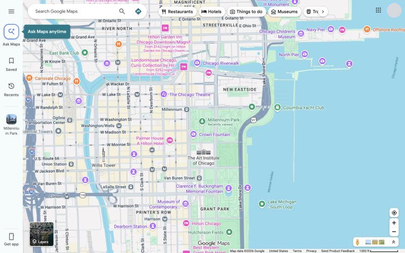
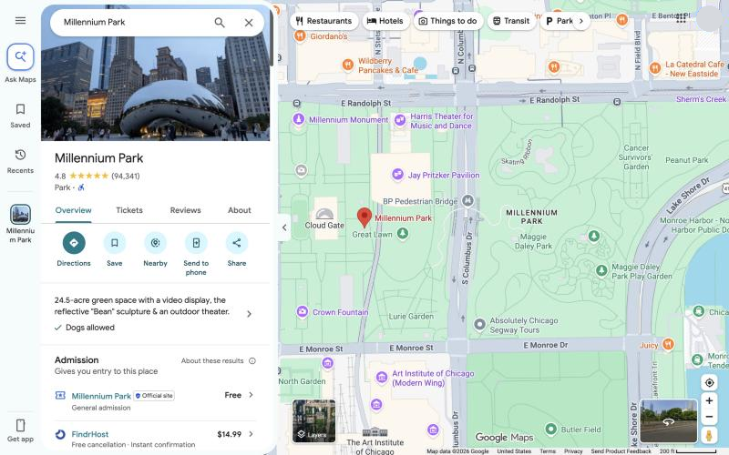
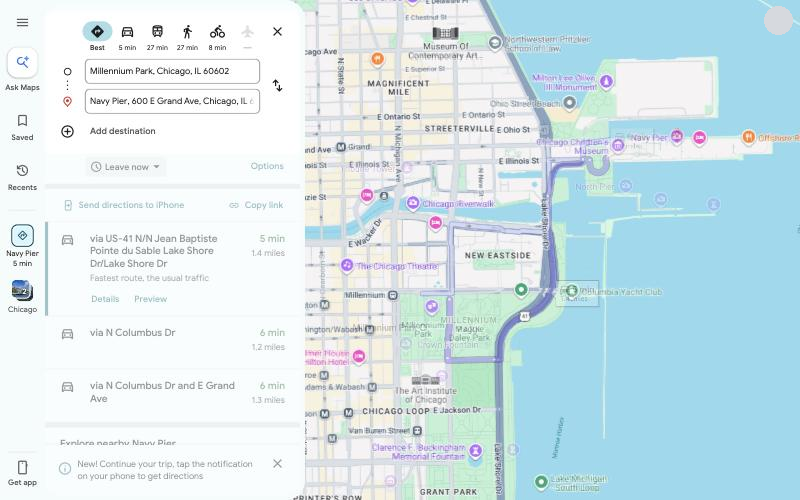
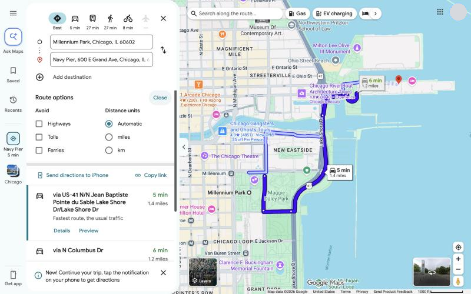
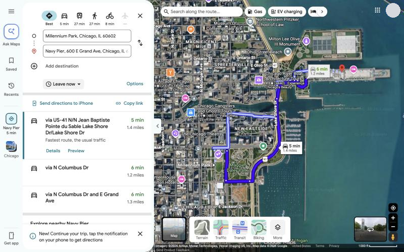
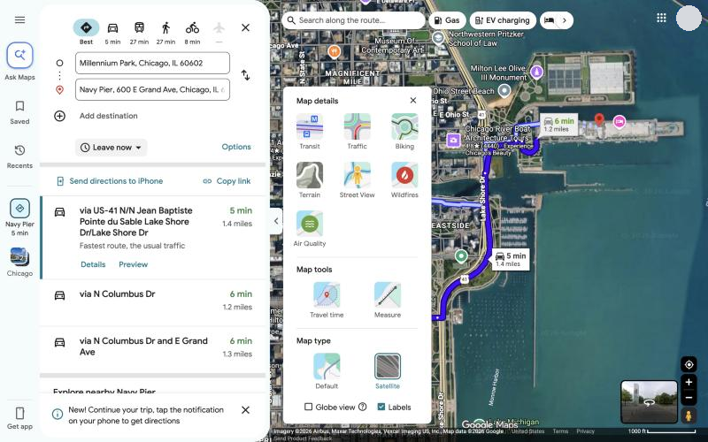
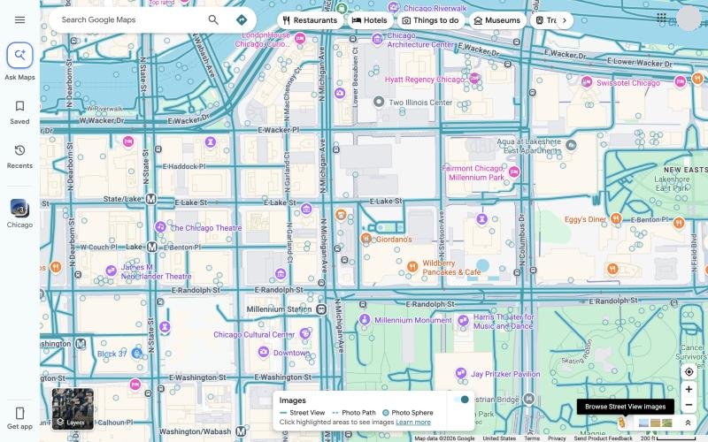
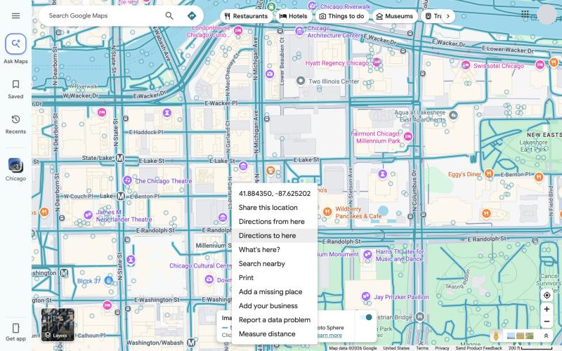
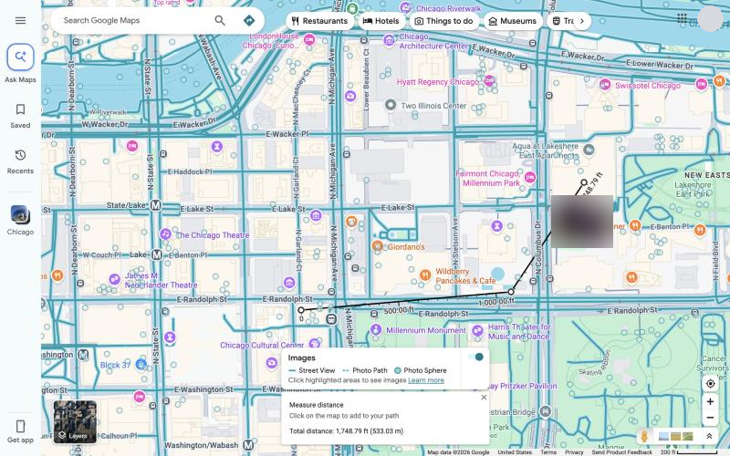
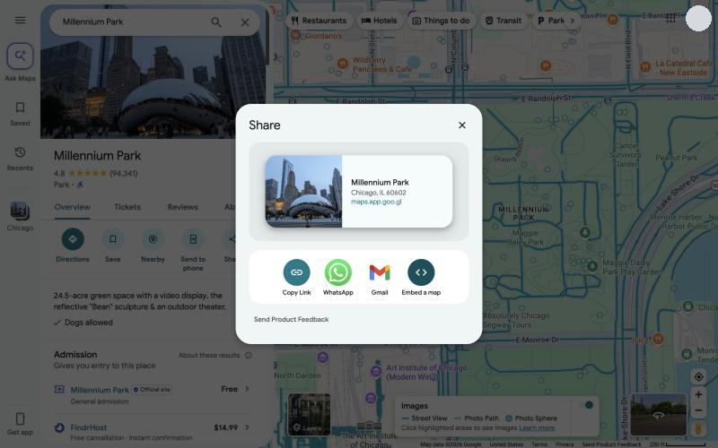

About this guide
This guide shows first-time and casual users how to use Google Maps in a computer web browser to find places, get directions, change the map view, measure distances, save and share places, and manage their history.
It covers the website at google.com/maps. The phone app works differently: turn-by-turn navigation, Timeline, and starting location sharing happen on your phone, and the web version points you there when it matters.
You need a current web browser and an internet connection. You need a Google account only to save places, make lists, and see your Maps history.
How to read the steps.
- Bold text is a label you see on screen, such as Directions.
- "Click" means press the left mouse button once. "Right-click" means press the right button.
- Google changes the Maps layout often and tests changes with different people, so your screen may differ slightly. The figures were captured in October 2026 in a desktop browser.
- Each figure has a short note. Profile pictures are hidden in every figure.
Get started
To start, open Google Maps in your browser and, if you want to save places, sign in with your Google account.
- Open your browser and go to google.com/maps.
- To sign in, use your Google account from the top-right corner of the page. You can use Maps without signing in.
- To center the map on where you are, click the location button at the bottom right. Your browser asks for permission to share your location. Allow it if you want Maps to use it.

Tour of the main screen
| Where | Name | What it does |
|---|---|---|
| Top left | Menu (three lines) | Opens the menu, which includes your Maps history |
| Top left | Search box | Finds places, addresses, and types of place. Press Enter or click the Search icon |
| Next to the search box | Directions button | Opens the directions panel |
| Left side | Ask Maps | Lets you describe what you want to find in everyday language, with help from Gemini. This guide does not cover it |
| Left side | Saved | Your saved places and lists (sign-in required) |
| Left side | Recents | Places you have looked at recently |
| Left side | Get app | Information about the Google Maps phone app |
| Top | Category buttons | One-click searches such as Restaurants, Hotels, and Things to do |
| Bottom left | Layers | Changes the map type and the details shown |
| Bottom right | Location, +, and - buttons | Center the map on you, zoom in, and zoom out |
| Bottom right | Pegman (yellow figure) | Shows where Street View is available |
Drag the map with your mouse to move around it. Scroll the mouse wheel, or use the + and - buttons, to zoom.
Find a place
To find a place, type its name or address in the search box and open a result to see its place card.
- Click the search box and type an address, a place name, or a type of place such as
restaurants. - Press Enter or click the Search icon.
- Click a result in the list, or click a pin on the map. Square pins are ads.
- Read the place card on the left. For most places it shows the address, hours, phone number, website, and ratings.

The place card buttons
| Button | What it does |
|---|---|
| Directions | Starts directions to this place |
| Save | Adds the place to one of your lists |
| Nearby | Searches for other places near this one |
| Send to phone | Sends the place to your phone |
| Share | Opens the Share box with a link you can copy |
More ways to search
- A category: type
restaurantsorpharmacyto see matches in the area on the map. - Coordinates: type latitude and longitude, for example
41.40338, 2.17403. - A narrower search: add a city or postcode, such as
groceries in Portsmouth, Hampshire. - A bigger map: click the small arrow on the edge of the left panel to hide the panel and see the full map.
Get directions
To get directions, click Directions, enter a start and a destination, choose a travel mode, and click the route you want.
- Click Directions on a place card, or click the Directions button next to the search box.
- Enter your starting point and destination. You can type an address or place name, or click a point on the map. The swap arrows between the two boxes reverse the trip.
- Click a travel mode at the top of the panel: Best, Driving, Transit, Walking, Cycle, or Flights. Each shows its travel time, and a mode is greyed out when it is not available for the trip.
- Compare the routes. The best route is highlighted on the map and the others appear in a lighter color. Click a route in the list or on the map to select it.

Avoid highways, tolls, or ferries
- After you get directions, click Options.
- Under Avoid, check Highways, Tolls, or Ferries.
- Under Distance units, choose Automatic, miles, or km.
- Click Close to return to the routes.

Set a time, add stops, and see the steps
| To do this | Click |
|---|---|
| Leave or arrive at a set time | Leave now, then Depart at or Arrive by, and set the date and time. This works only for trips with one destination |
| Add a stop | Add destination below your destinations, then choose another place. You can have up to 9 stops, including the final one. Stops are not available for Transit or Flights |
| Reorder stops | Drag a destination to a new position |
| See step-by-step directions | Details under the route, then Expand for more detail |
| Move the trip to your phone | Send directions to your phone, then choose a device or email |
| Copy a link to the route | Copy link |
Change the map
The button in the bottom-left corner of the map controls the map layers. Use it to switch to satellite imagery, show traffic or transit lines, or open Street View.
Switch between the default and satellite views
- Find the layers button in the bottom-left corner. It shows a small thumbnail of the view you would switch to.
- Click the button to toggle between the default map and Satellite.
- Hover over the button to open the layers menu, shown in Figure 5.

| Layer | What it shows |
|---|---|
| Terrain | Elevation and landforms, shown as shaded relief and contour lines |
| Traffic | Current traffic conditions on roads, in green, orange, and red |
| Transit | Bus, train, and subway lines |
| Biking | Bike lanes and bike-friendly routes |
| More | The full Map details panel |
Open the Map details panel
- Hover over the layers button, then click More.
- Under Map details, click the layers you want: Transit, Traffic, Biking, Terrain, Street View, Wildfires, or Air Quality.
- Under Map type, choose Default or Satellite.
- Check or clear Globe view and Labels as needed.
- Click X to close the panel.

Look around with Street View
Street View shows 360-degree photos taken along roads and paths. To use it:
- Open the Map details panel and click Street View. Blue lines and dots appear wherever imagery exists, as shown in Figure 7. You can also find the Pegman, the small yellow figure, in the bottom-right corner.
- Drag the Pegman onto a blue line, or click a blue line on the map.
- Click the arrows on the road, or click a spot in the image, to move.
- Drag the image to look around. The compass in the bottom-right corner shows which way you are facing.
- Click Back at the top left to return to the map.

To see how a place looked in the past, click See more dates in the Street View image and choose an earlier date, if one is listed. You can also click a place photo that has the Street View icon on it.
Right-click and measure tools
Right-clicking anywhere on the map opens a menu of shortcuts for that exact spot. It is the quickest way to start directions from a point that has no address, look up coordinates, or measure a distance.
- Right-click a spot on the map. A menu opens at that point, as shown in Figure 8.
- Click the option you want.

| Menu option | What it does |
|---|---|
| Coordinates | Shows the latitude and longitude of the spot |
| Share this location | Opens the share dialog for the spot |
| Directions from here | Starts a route at the spot |
| Directions to here | Ends a route at the spot |
| What's here? | Opens a card with details about the spot |
| Search nearby | Searches for places near the spot |
| Opens the print options | |
| Add a missing place | Lets you suggest a place that is not on the map |
| Add your business | Starts the process to list a business |
| Report a data problem | Lets you report an error on the map |
| Measure distance | Starts the measuring tool |
Measure a distance
- Right-click the starting point and click Measure distance. A small card appears at the bottom of the map.
- Click the map to add each point along your path. Figure 9 shows a path in progress.
- Read the Total distance on the card. It updates each time you add a point.
- To move a point, drag it. To remove a point, click it.
- Click X on the card to close the tool and clear the path.

You can also open the tool from the Map details panel: click More on the layers menu, then click Measure under Map tools. A map with a measured distance cannot be shared, so take a screenshot instead if you need to send it.
Save places and lists
Lists keep the places you want to find again, such as restaurants to try or stops on a trip. You must be signed in to your Google account to save places. This section has no screenshot because the Saved screen shows your personal places.
Create a list
- Click Saved in the left rail, or click Menu and then Saved.
- Click New list.
- Enter a name. You can also choose an icon and add a description.
- Click Create.
Save a place to a list
- Search for a place and open its card.
- Click Save.
- Choose a list, or click New list to make one.
- Click Create if you made a new list.
To remove a place, open its card, click Saved, and clear the check box beside the list.
Share a list
- Open the list from Saved.
- Click More, then choose Send a link to view to share a read-only link. To control who can see the list, choose Sharing options and set the list to Private or Shared.
- To let other people add places, click Invite to edit, then Get a link, and click COPY THE LINK to copy the link. You can also turn on Let others edit your list under Edit Options.
| Good to know | Details |
|---|---|
| Delete a list | Open the list, click More, then Delete list |
| Starred places | The Starred places list cannot be shared |
| Icons | The icons on the default lists cannot be changed |
Share, send to your phone, and print
Share a place or a map
- Open a place card and click Share, or right-click the map and choose Share this location.
- In the dialog, choose how to share. Figure 10 shows the choices.
- Click Copy Link to copy the link, or choose WhatsApp or Gmail to send it in that app.

To put a map on your own web page, click Embed a map, then Copy HTML, and paste the code into your page. You can also reach these options by clicking Menu and then Share or embed map.
A map that has saved locations, a measured distance, or a map image cannot be shared.
Send directions to your phone
- Get directions as described earlier.
- Click Send directions to your phone. The button names the type of phone linked to your Google account.
- On your phone, tap the notification to open the route in the Google Maps app.
You must be signed in on the computer and on the phone, with the same Google account. Click Copy link instead if you want to paste the route into a message.
- Right-click the map and choose Print.
- Choose Print including maps or Print text only.
- Follow the on-screen prompts to choose a printer and print.
The two print choices are described on the Google Maps Help page. They were not captured in the screenshots for this guide, so check the labels on your screen.
Privacy and your history
When you are signed in, Google Maps can keep a record of the places you search for and view. You can review and delete that record at any time.
Review and delete your Maps history
- Click Menu, then Maps history.
- To remove one entry, click Remove beside it.
- To remove many entries, click Delete, then choose Delete today, Delete custom range, or Delete all time.
- For a custom range, enter the start and end dates, click Next, and then click Delete.
To delete a single place, open Your Maps history and click Delete beside the place under Recent Maps history.
Deleting Maps history does not delete your Timeline visits, your saved lists, or your reviews and photos.
What you cannot do on a computer
| Feature | On a computer |
|---|---|
| Timeline | Not available. To turn it off or delete all of it, use My Google Activity. To delete only part of it, use the Google Maps app on your phone |
| Start location sharing | Not available. You can start sharing only in the mobile app |
| Stop location sharing | Go to myaccount.google.com/locationsharing and click Stop beside the person |
The Recents item in the left rail stays grey until you have viewed some places. This is normal.
Troubleshooting and FAQ
| Problem | What to try |
|---|---|
| A travel mode is greyed out | The mode is not available for that trip. For example, Flights is greyed out when there is no flight route. Choose another mode |
| I cannot add a stop | Stops are not available for Transit or Flights. Switch to Driving, Walking, or Cycle. The limit is 9 stops, including the final one |
| I cannot set a departure time with several stops | Depart at and Arrive by work only for trips with one destination. Remove the extra stops first |
| The Recents item is grey | It becomes available after you view some places |
| A layer does not appear | Some layers are not available in every area or at every zoom level. Zoom in or out, or move to a different area |
| I cannot share my map | A map with saved locations, a measured distance, or a map image cannot be shared. Share a single place instead |
| I cannot find Timeline or start location sharing | Both are mobile features. Use the Google Maps app on your phone |
| I cannot save a place | Check that you are signed in to your Google account |
Frequently asked questions
Can I get turn-by-turn voice navigation on a computer? No. On a computer, Google Maps shows the route and the step-by-step directions. To navigate as you travel, send the route to your phone.
Do I need an account? No. You can search, get directions, and change the map without signing in. You need an account to save places, view your history, and send directions to your phone.
How do I look at a map in satellite view? Click the layers button in the bottom-left corner. See "Change the map."
Why does my screen look different from the figures? Google updates Maps often, and some features differ by region and account. The figures in this guide were captured in October 2026.
Quick-start card and sources
Quick-start card
| I want to | Do this |
|---|---|
| Find a place | Type it in the search box and press Enter, then click the result |
| Get directions | Click Directions, enter a start and destination, then pick a travel mode and a route |
| Avoid tolls or highways | After you get directions, click Options and check Tolls or Highways under Avoid |
| Switch to satellite | Click the layers button in the bottom-left corner |
| Show traffic or transit | Hover over the layers button and click Traffic or Transit |
| See a street | Open Map details, click Street View, and click a blue line |
| Measure a distance | Right-click the map, choose Measure distance, and click each point |
| Save a place | Open its card, click Save, and choose a list |
| Share a place | Open its card, click Share, and click Copy Link |
| Send a route to my phone | After you get directions, click Send directions to your phone |
| Delete my history | Click Menu, then Maps history, then Delete |
Sources
This guide was written from direct use of Google Maps in a desktop web browser in October 2026, checked against these Google Maps Help pages:
- Search locations on Google Maps
- Get directions and show routes in Google Maps
- Use layers to find places, traffic, terrain, biking, and transit
- Use Street View in Google Maps
- Measure distance between points
- Create a list of places
- Save favorite places
- Share, send, or print directions from Google Maps
- Manage your Maps history
Map data ©2026 Google. Screenshots were captured by the author and edited only to hide personal details. Google Maps is a trademark of Google LLC. This guide is an independent portfolio sample and is not affiliated with or endorsed by Google.